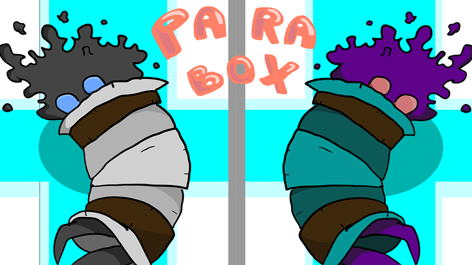

Le but de ce lab est la création d'un prototype de jeu en groupe sur le logiciel Unity.
Aurélien Chambolle-Solaz
Igor Semezies
Ulysse Rousselet
Cyprien Bourotte
Corentin Courard
Florian Rivault
David Martinez
Corentin Courard
Florian Rivault
David Martinez
Antoine Colette
Aurélien Bayle
Gaspard Depond
Valentin Maupas
Corentin Courard
Florian Rivault
David Martinez
Diane Larat
Benjamin Nouhaud
Corentin Courard
Florian Rivault
David Martinez
Avi Delouya
Matheo Esteve
Maxim Guillot
Raphaël Delacote
Thibaud Delorme
Corentin Courard
Florian Rivault
David Martinez
Emile Azizaj
Noe Lamarque
Lya Gall
Prudence Galland
Nathan Pourriol
Corentin Courard
Florian Rivault
David Martinez
Floriana Lancastre
Karliss Dorlin
Nathan Kokabi
Romeo Fondaneiche
Valentin Maupas
Corentin Courard
Florian Rivault
David Martinez
Adam Nachnouchi
Eliott Salvi-Touboul
Felix Barbey
Matthieu Bourgouin
Michel Ricard
Thècle Lacouture
Yves Tardieu
Corentin Courard
Florian Rivault
Emmanuel Favi
Daran Sen
Dimitri Maniraho
Guillaume Zee
Ibrahim Mallouka
Lucien Février
Matéo Repulles
Corentin Courard
Florian Rivault
Emmanuel Favi
Alois Mellan
Franck Huang
Jewin Cheng
Joelly Huin
Joseph Sommet
Jérémy Molvaut
Roxane Poidras
Corentin Courard
Florian Rivault
Emmanuel Favi
Ari Nathan
Ghasper Euryale
Hoel Masson-Cariou
Louison Chaloin-Cochard
Toma Fouquet
Felix Grisot
Corentin Courard
Florian Rivault
Antoine Rivier
Amaury Britsch
Athénaïs Dellenbach Beauplet
Ayane Schmitt
Ilyes Ben Saber
Lee Paris
Marilou Leroy
Corentin Courard
Florian Rivault
Antoine Rivier

Anthony Macario
Célian Hamidi
Denis Baciu
Felix Barbey
Matthieu Bourgouin
Tony Hong
Corentin Courard
Florian Rivault
Antoine Rivier